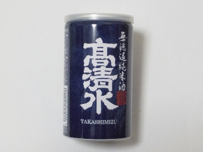

秋田酒類製造の高清水。
2024/11/09

無濾過純米酒なので雑味が多いかと思ったんですが、そんなことなかったです。
見た目もクリアだし、味もちょっと辛口で飲みやすかったです。
300円くらいの純米酒でこの味はお買い得な感じがしました。瓶じゃなくてアルミ缶なのがいいのかな？。
秋田県秋田市川元むつみ町4番12号
2024/11/09

無濾過純米酒なので雑味が多いかと思ったんですが、そんなことなかったです。
見た目もクリアだし、味もちょっと辛口で飲みやすかったです。
300円くらいの純米酒でこの味はお買い得な感じがしました。瓶じゃなくてアルミ缶なのがいいのかな？。